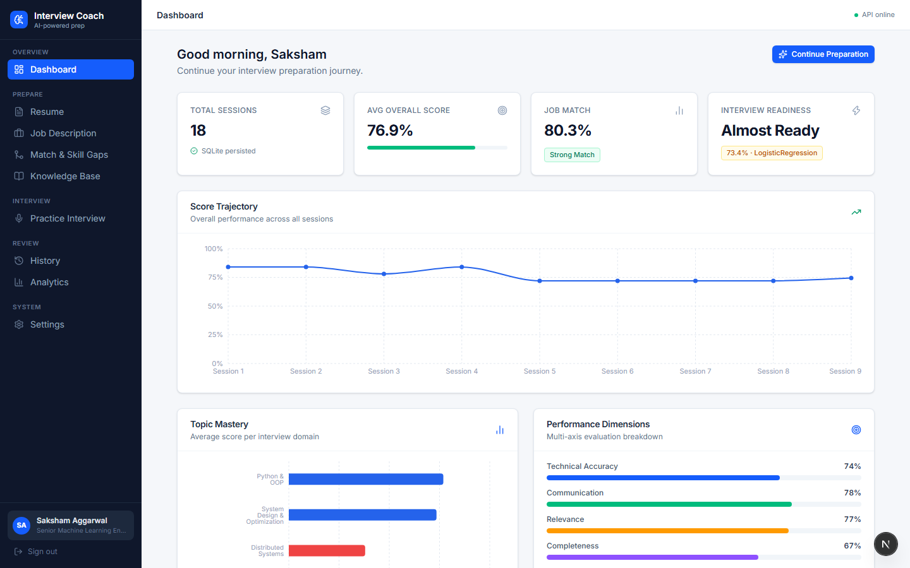
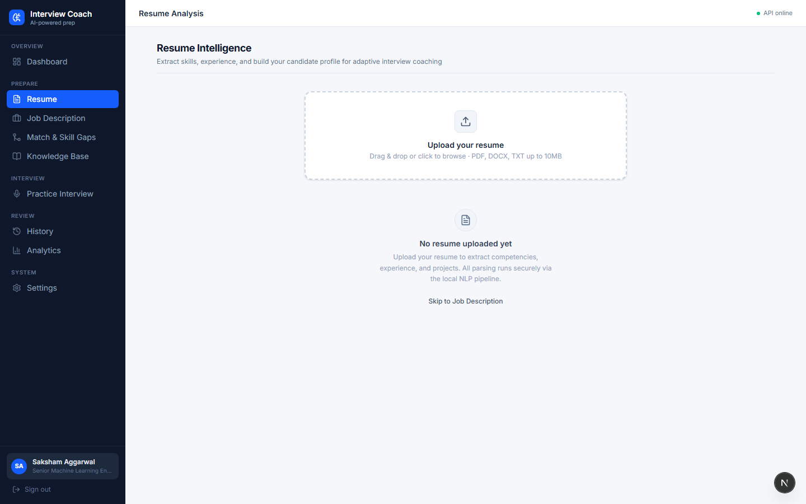
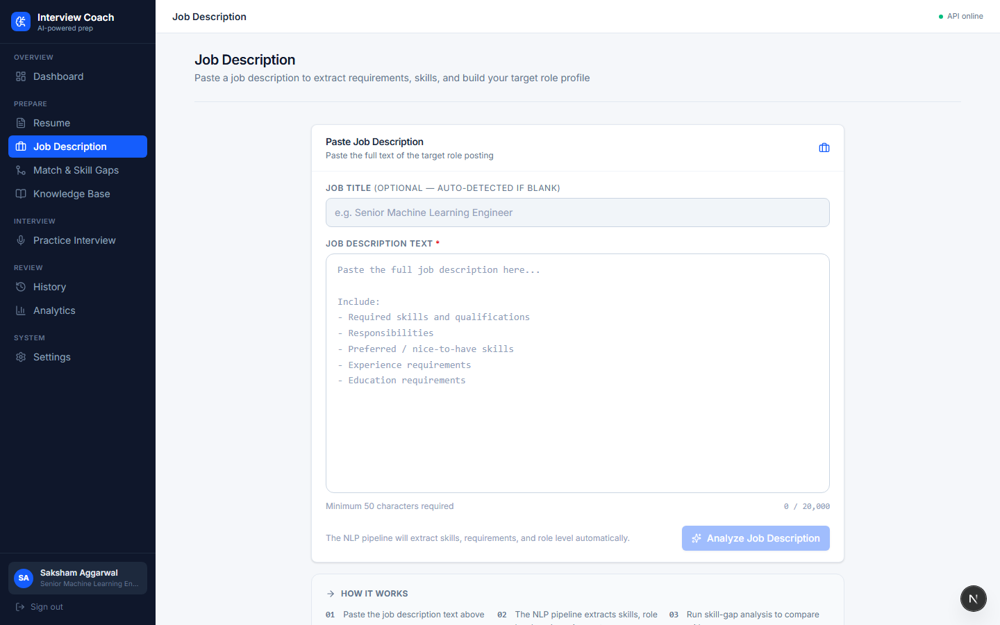
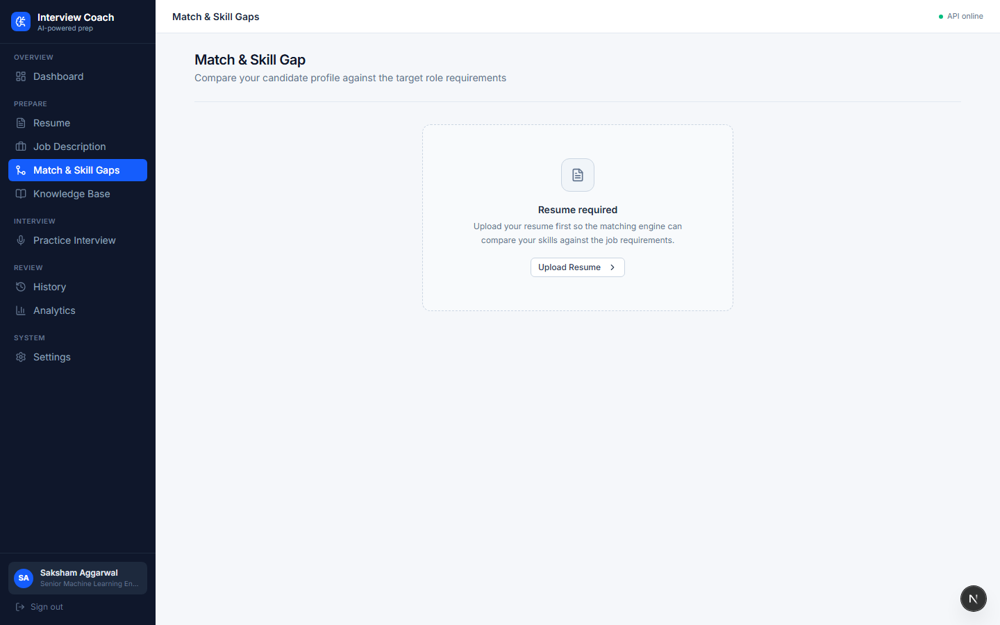
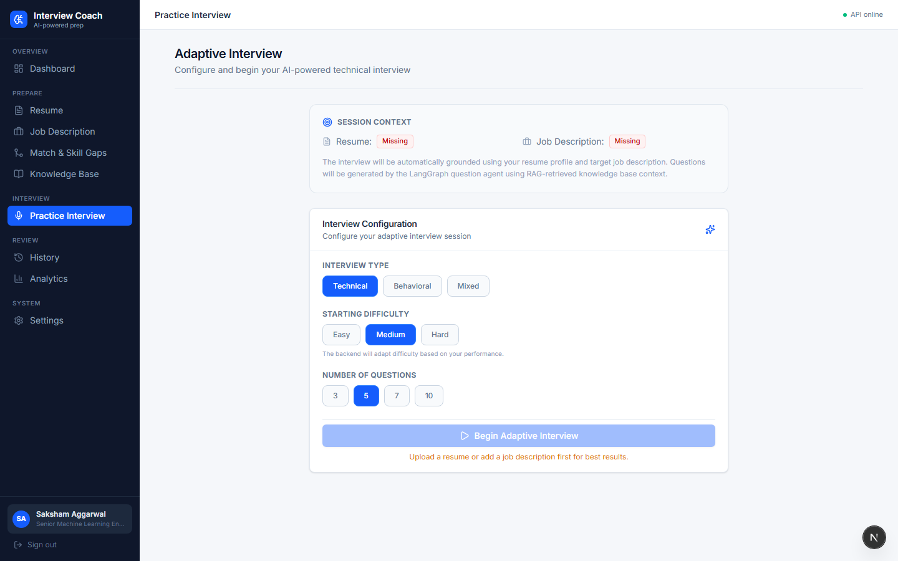
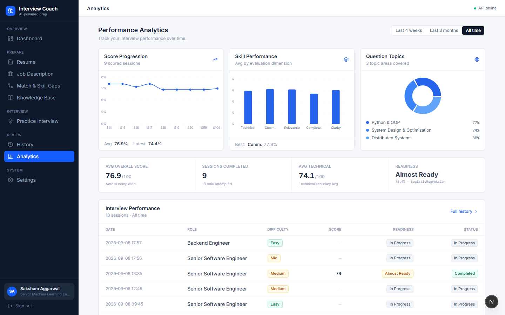
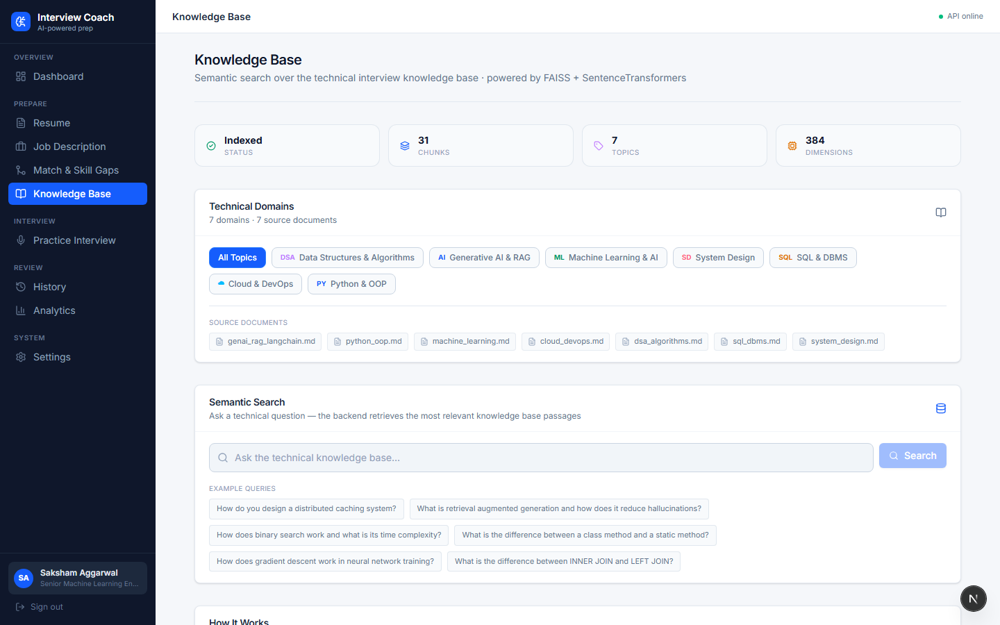
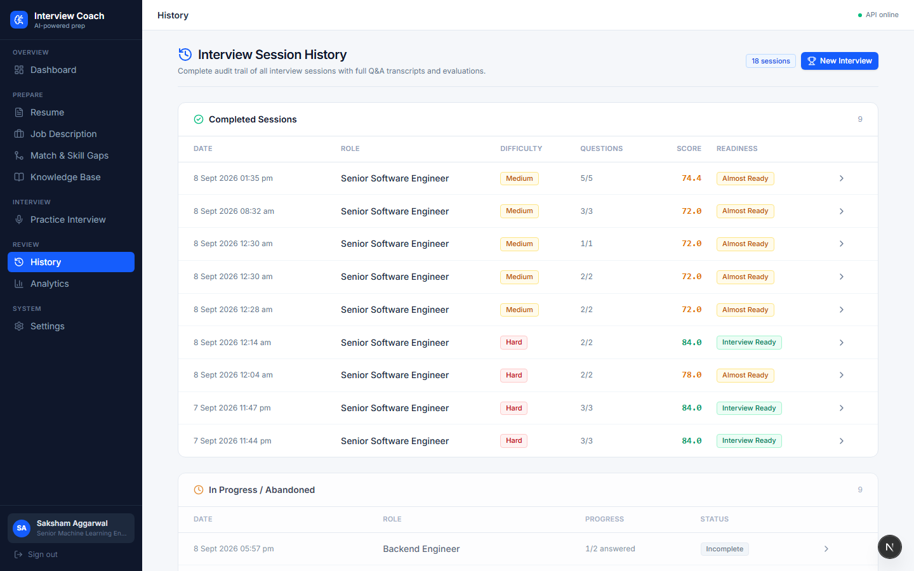
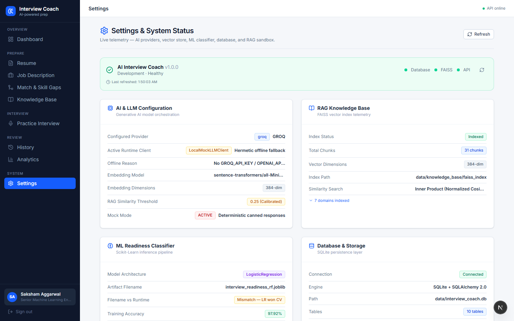

Performance Dashboard & Overview
Executive dashboard showing total interview sessions, average overall score progression, readiness classification tier, and active candidate profile (Saksham Aggarwal).

Resume ATS Analyzer & Project Extraction
Resume upload zone and NLP parser extracting contact details, technical skills, years of experience, education, and multi-project portfolio items.

Job Description Parsing & Seniority Extraction
Real-time job description analyzer parsing role requirements, minimum qualifications, core technical stacks, and seniority level detection.

Skill Match & Gap Analysis
Hybrid skill-gap engine comparing candidate resume profile against target job description, identifying matched skills and missing technical domains.

Adaptive Technical Interview Engine
Interactive technical interview screen powered by LangGraph state machine, generating role-tailored questions via Groq with live timer, question counter, and speech recording.

Performance Analytics & Scikit-Learn ML Readiness
Multi-dimensional performance graphs displaying score progression over time, topic mastery breakdowns, and empirical ML interview readiness tier.

Knowledge Base & FAISS Vector RAG Engine
Semantic search portal querying 31 indexed knowledge chunks across 7 core topics (System Design, Distributed Systems, ML, etc.) with L2 cosine similarity retrieval.

Interview Session History & Detailed Audits
Comprehensive audit log of all completed and in-progress interview sessions, showing timestamped scores, target roles, and expandable Q&A evaluation breakdowns.

System Health & Model Architecture Settings
System observability dashboard displaying live connectivity status for FastAPI backend, Groq LLM client, FAISS vector store, SQLite database, and Whisper speech engine.
